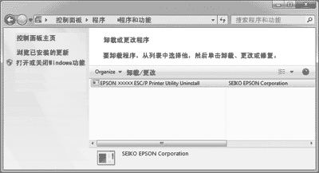
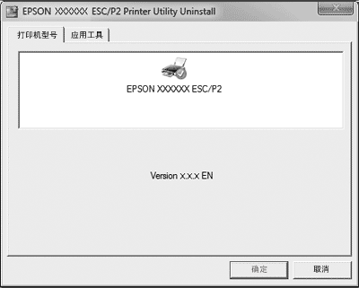

|
|
|||
 |
||||
卸载打印机软件
当您想重新安装或升级打印机驱动程序时，卸载已安装的打印机驱动程序。
 注释：
注释：|
要从多用户Windows XP 或2000环境下卸载EPSON Status Monitor 3，在卸载前从所有客户机上删除快捷图标。通过在监视参数对话框中清除快捷图标复选框来删除图标。
|
卸载打印机驱动程序和EPSON Status Monitor 3
 |
退出所有应用程序。
|
 |
对于Windows 8.1或8:
单击开始屏幕上的桌面，移动光标至屏幕的右上角，单击设置，然后单击控制面板。 |
对于Windows 7, Vista或 XP:
单击开始, 然后选择控制面板。
单击开始, 然后选择控制面板。
对于Windows 2000，
单击开始，指向设置，然后选择打印机。
单击开始，指向设置，然后选择打印机。
 |
单击卸载程序(Windows 8.1、8、7或Vista) 或双击添加或删除程序图标(Windows
XP或2000)。
|
 |
单击更改或删除程序(仅Windows XP或2000 ), 选择EPSON
XXXXXX ESC/P2 Printer Utility Uninstall, 然后单击卸载/更改
(Windows 8.1、8或7) 或更改/删除(Windows Vista、XP或2000)。
|

 |
单击打印机型号标签, 选择您想卸载的打印机图标, 然后单击确定。
|

注释：|
确保在打印机型号标签上未进行任何选择。 单击应用工具标签，并选择EPSON
Status Monitor 3(对于EPSON XXXXXX ESC/P2)，再单击确定。 您仅可卸载EPSON
Status Monitor 3。
|
 |
按屏幕提示操作。
|